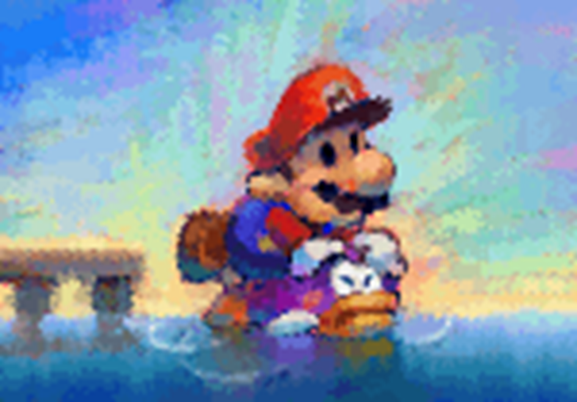
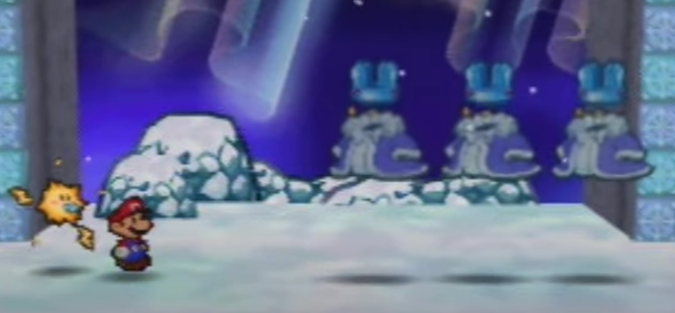

Personal Traits
Table of contents
A character's Personal Traits are all their special qualities which are passively active, with a wide variety of effects.
Generally speaking, if multiple instances of a Trait would apply – such as multiple Contact Traits – only one is active at a time. Typically this applies to the stronger Trait, or in the case of a negative Trait like Weakness, the more troublesome Weakness.
This can be subjective though, and in some cases up to the character to decide, so make sure to check with your GM.
Aquatic
A character with this Trait is comfortable underwater. They treat movement through the water like it's as simple as walking, and typically don't need to make checks to do so, unless they need to move quickly or through particularly hazardous waters. They're never at risk of drowning, and can spend any amount of time underwater comfortably.
Carrier
A character with this Trait can carry one other character easily; usually they carry them around on their back, but the specifics will vary depending on the character.
As an action, a character can either pick up an adjacent ally or climb aboard an adjacent ally with Carrier – similarly to Swapping, both characters can make a Coordination check to speed this up. With a Great result from both characters, this becomes a free action.
During either character's turn, they can split back up as a free action, with the carried character taking up a space adjacent to the carrier. If the carrier is Dazed, Stunned or KO'd, both characters split up immediately.
While a character is being carried they move with the carrier, occupy the same space in combat and take their turn after the carrier. They can't be targeted if the carrier is in the way, and likewise, the carrier can't be targeted by attacks if their passenger would block them.
If an attack would affect both characters at the same time (e.g. Group, Quake), it hits them as normal.

The combination of Aquatic and Carrier can be a huge help to land-bound allies. Bloopers and Cheep Cheeps are great at this, giving you a chance to shine whenever the water calls to your adventure. You can even ferry people around during battle!
Clone
You are able to split your mind and body into two or more like-minded individuals. You retain control of all your clones.
Clones can be either Copies or Illusions. Regardless of the style of cloning, the character activating a split retains all their Items, and the clone is left with none; likewise if two or more clones re-combine, the resulting character takes all of their Items.
Copies
Your split characters are perfect copies of yourself, requiring you to make a Steady check as an action to split into two or for any two clones to re-combine. With a Great result this becomes a free action, but otherwise both clones lose their action for the turn.
When split apart, each copy is weaker than the sum of its parts; both the original character and the clone each have their max HP, max FP, BP, Stats and Skills effectively halved.
You all retain your existing HP and FP, up to the limit of your new maximums, and all clones share access to the same SP pool, as long as they're under your control.
When re-combining, any HP or FP loss is carried over from the clones, and your overall abilities are recalculated as appropriate; you never risk losing stats to a rounding error.Example: Fuzzy Splits
A Fuzzy with 15 HP splits into two Fuzzies, who each have 7 HP. One of the clones then takes 1 damage, going down to 6/7 HP.
When re-combining, the Fuzzy goes back to having 15 HP at maximum.
Since one of the clones took 1 damage, the re-combined Fuzzy has 14/15 HP.Each clone is able to split into another pair of clones as an action, though you can only split into more clones if you have enough HP to split.
As long as you retain control of the clones, they each have the combined knowledge and awareness of every other clone.
It's difficult to divide your consciousness up like this; for every 10 turns that passes with your clones split apart, you must make a Steady check using your original stats and skills, requiring a Grade of Success for every 10 turns that's already passed.
If you fail, you lose control of all active clones and are completely Stunned (6) for a turn.
Resting can restore your lost abilities after losing control, but all your clones will remain active – and most likely, hostile.Illusions
Your split clones are illusory, requiring you to make a Magic or Trickery check as an action to conjure them.
You pay 1 FP for every clone created, and can create up to 1 clone for each Grade of Success. If you attempt to create more with another action, the existing clones dissipate immediately.
Each of the illusions are functionally lifeless imitations of the original, with no ability to take actions of their own. On your turn you can direct them to fly around like ghosts and act out actions, and you can perceive things as they would, but they are completely intangible and pass straight through solid matter. Despite their intangible nature, if they would be attacked or otherwise lose HP, they immediately dissipate.
You can use the clones to effortlessly disguise your own actions as long as you have at least one near you. While doing so, you can Dodge as if Boosted by a Status Level equal to the number of clones near you – however when you do this, each successfully dodged attack causes one of the clones to be hit instead, destroying them. Maintaining the illusion requires constant concentration; for every turn that passes with your illusory clones active you must choose and attempt one of the following:
- Pay 1 FP for every clone still active, and 1 FP for every turn that's already passed.
- Make a Steady check with a Grade of Success for every turn that's already passed.
If you fail to do either of the above your illusory clones disappear, though you suffer no other consequences.

In the thick of battle, it doesn't matter if your illusions are unconvincing – they just need to distract the enemy for a split second
Construct
A character with this Trait has an artificial body. They may still have the spark of life, but they're fundamentally different from organic life.
- Constructs can equip Built-In Gear, which are functionally identical to Gear, but occupy a part of their body as well as their inventory. This Gear is harder to disarm (granting +1d6 to checks to hold onto them), but losing them is bound to cause more problems than normal.
- Constructs don't need to breathe, and may not even have a mouth, granting them a number of passive immunities in addition to their listed Traits (such as immunity to scent-based effects).
- Lifelike Constructs (such as Bob-Ombs or Puppets) can, and often need to, eat. However, True Constructs (such as Mechas) can't, preventing them from using Mushrooms, Syrups and other Items. They may still be able to use Power-Ups, though it might take some effort.
- Constructs can't be healed through conventional means; Crafts and appropriate tools are required in place of Heal. They otherwise follow all the standard rules for recovering HP.
Lifelike Constructs can still rest and be healed with Magic, though other Constructs need more specific methods (like recharging their batteries) – typically, they can't even recover from resting.
Don't feel like you have to play Constructs as soulless automatons if you don't want to. Many Constructs still think – and feel – for themselves.

Contact
An attacker making contact with this character is harmed in some way, and may suffer more debilitating effects. Typically, anyone harmed by Contact during an attack is interrupted, unable to finish their action.
Elevation
A character with this Trait is able to lift themselves above the battlefield, though they are themselves unable to fly and can't move much at all while elevated.
Elevated targets sit somewhere above the battlefield, though not entirely out of reach. If a character with this Trait is on the ground, they can make an Athletics check as an action to elevate themselves – with a Great result, it becomes a free action.
It's possible, though difficult, for elevated characters to lift other creatures.
This generally requires an Athletics check in and of itself, and the elevated character is often restricted by the height they can gain and the distance they can climb before resting.
Only Aerial, Reach or Ranged attacks can strike an elevated target.
Unlike a flying character, an elevated character receives no special benefits on their melee attacks, and making a melee attack without Reach causes their elevated state to end immediately.
An elevated character struck by an Aerial, Launch or otherwise powerful attack may have to make a Steady check or be knocked to the ground.
Efficient
A character with an Efficient ability is better at managing their FP under specific circumstances. This doesn't affect their standard Techniques in battle, but makes their other uses more cost-effective – especially Magic checks.
- When paying for the cost of an ongoing ability (such as Invisibility), the ability lasts twice as long for each FP payment.
- When casting spells on the fly with Magic, they pay less FP – for more details, see Magic – Spontaneous Spells.
- When activating the effects of a Power-Up, they pay ½ as much FP.
Fly
Flying targets sit somewhere above the battlefield, though not entirely out of reach. A character with this Trait is generally assumed to be flying unless they specifically choose not to. If they're on the ground, they can make an Athletics check as an action to start flying – with a Great result, it becomes a free action.
It's possible, though difficult, for flying characters to carry other creatures.
This generally requires an Athletics check, and the flying character is often restricted by the height they can gain and the distance they can fly before resting.
Only Aerial, Reach or Ranged attacks can strike a flying target.
Flying characters can make melee attacks against targets anywhere in battle.
These function similarly to Aerial attacks, although Plummeting and triggering Weakness (Aerial) still requires the Aerial trait.
A flying character struck by an Aerial, Launch or otherwise powerful attack must make a Steady check or be knocked to the ground.
Handless
This character has no hands. Typically this isn't an impediment to their life, and they can manipulate objects with the appendages they have or a small intangible force of will, but any check that requires fine motor skills or upper body strength requires a higher Grade of Success than normal.
If a character has a relevant specialisation for an action, ignore their Handless penalty; they're generally good enough at this that they can work around their shortcomings.
Hover
A hovering character sits slightly above ground level, floating in the air, and can even fly through the air for short bursts of time. They can make melee attacks against targets anywhere in battle, although these are not true Aerial attacks and can't force airborne targets to the ground.
Despite their hovering above the ground, melee attacks can still reach them just fine, though they're safe from Quake or Underfoot attacks.
Immune
A character with this Trait is completely immune to some kind of Technique or attack, taking no damage or adverse effects from it. They usually even benefit from the attack!
Where applicable, Immune applies before Weakness. If the effect would otherwise be positive, the affected character can choose to take on part of the Technique's effect in addition to any effects their Immune Trait would provide.
Intangibility
A character with Intangibility can become solid or intangible as an action.
While intangible they appear translucent and are virtually untouchable, effectively making them Secure, though certain methods may affect them or bring them back to a solid state.
This intangibility can usually be shared with another target, too, though in this case neither character can move or act while intangible.
Characters with Intangibility and Invisibility can use them as the same ability, activating and paying for both as if they were one Trait.
Generally this ability takes an action to activate, costs 1 FP per turn, and can't be used under serious stress (such as during combat). Each turn after the first requires more FP and a Steady check, requiring a Grade of Success for each turn that's already passed. If you fail, you become Dazed for 1 turn.
If you otherwise take damage or become Dazed or Stunned, you become tangible immediately.
Invisibility
A character with Invisibility can become visible or invisible as an action. While invisible they are virtually undetectable, effectively making them Secure, though certain methods may reveal their presence.
This invisibility can usually be shared with another target, too, though in this case neither character can move or act while invisible.
Characters with Invisibility and Intangibility can use them as the same ability, activating and paying for both as if they were one Trait.
Generally this ability takes an action to activate, costs 1 FP per turn, and can't be used under serious stress (such as during combat). Each minute after the first requires more FP and a Steady check, requiring a Grade of Success for each minute that's already passed. If you fail, you become Dazed for 1 turn.
If you otherwise take damage or become Dazed or Stunned, you become visible immediately.
Latent
Characters with this trait have untapped power within them, allowing them to quickly and easily use the effects of a specific Item or Power-Up on themselves.
This requires an action and functions exactly as if they used that Item or Power-Up on themselves, and doesn't require any check on their part to activate.
Typically this effect costs 5 FP, though the exact cost and duration depends on the source of this power.
Mimicry
The ancient art of the Duplighosts is similar to Magic, but its tighter focus allows it to reach greater heights.
A character with this ability can make a Magic or Trickery check as an action to transform completely into another creature. This transformation is a complete physical transformation with an effect on the user's psyche, giving them all the Traits, Techniques and other physical qualities of their new form – even their Skill Specialisations!
You can revert back to your own form during your turn as a free action, requiring no check.
While transformed, you lose your own Techniques and Traits, but you retain your own Stats, Skills, Power and Skill Specialisations. If your Power is more or less than the new form's, your new Techniques are modified accordingly.
Transformations become harder and more expensive to maintain the less familiar you are with the intended form. For each Grade of Success achieved beyond the requirements, you can pay 1 less FP per turn – potentially negating the FP cost altogether.
- Nice!: A familiar, ordinary creature that you can see, such as a Goomba, Koopa or Boo. Costs 1 FP per turn.
- Good!: An ordinary creature. Costs 2 FP per turn.
- Great!: An unusual or large target that you can see, such as a Piranha Plant, Chomp or Hothead, or an ordinary creature with copies of their equipment. Costs 3 FP per turn.
- Wonderful!: An unusual or large target, or an ordinary creature with copies of their equipment. Costs 4 FP per turn.
- Excellent!: An extremely unusual or large target that you can see, such as a dragon or giant Blooper. Costs 5 FP per turn.
- Unbelievable!: A creature that you have no visual reference for, which may not even exist; it can even be extremely unusual or large. Costs 6 FP per turn.
Naturally, these transformations are unstable; if you lose focus while transformed (such as by taking damage), you must make a Steady check, requiring the same Grade of Success as if you were transforming into your current form. On failure, you revert forms on the spot.
Mimicry is an incredibly powerful Trait. Even investing in it a little bit will allow you to transform into your enemies and allies, expanding your options in and out of battle. And if you get really good at it, you can essentially do anything! It's as open-ended as Magic itself, if you get creative
Resilient
A character with this Trait is hard to keep down. After being KO'd, they can make a Steady check as an action.
With a Nice result, they can get back up, and if they have less than 5 HP they recover back up to 5 HP; with an extra Grade of Success, they can act immediately, too!
Each successful Resilient check increases the required Grades of Success for future checks in that scene or encounter. If this would force the minimum required above Unbelievable, then that result becomes impossible.
If a Resilient character is KO'd by one of their Weaknesses, their Resilient Trait is rendered inactive until they can naturally recover.
Resist
A character with this Trait has some measure of Defense versus certain effects, even protecting them from Piercing attacks; however this Defense bonus only applies to the specified kind of attack.
If an attack or other effect of their resisted type would inflict a Status, this character receives +1d6 to checks to resist or overcome that Status for each point of Resist they have.
They may also take on a side-effect of the attack, similar to Immune, which applies even if the damage would be negated.
Where applicable, Immune and Weakness overrule Resist.
Sinker
A character with this Trait cannot swim in water, at all, though they can walk around at the bottom of the water.
If they're Aquatic, they don't risk drowning, and can move comfortably as if they were on dry land.
Otherwise, their ability to move (e.g. Athletics) is hampered, as if they were Weakened (1), and if they need to breathe they may risk drowning.
See the rules on Underwater Terrain for more information.
State
You are able to enter a different State, either at-will or in response to other actions, which provides its own benefits and drawbacks. The details vary from State to State.
Undead
A character with this Trait isn't, technically speaking, alive. They may still have the spark of "life", but they're fundamentally different from their living counterparts.
- Undead can never truly be ended; even if they aren't Resilient, their spirit will linger on in some fashion.
- Undead don't need to breathe, granting them a number of passive immunities in addition to their listed Traits (such as immunity to scent-based effects).
- Lifelike Undead (such as Boos or Broozers) can, and often need to, eat – though they may have different preferences to the living.
However, True Undead (such as Dry Bones) can't eat at all, preventing them from using Mushrooms, Syrups and other curatives.- Undead can't be healed through conventional means; typically, only Magic substitution or appropriate Magic-based Techniques will work, which may even need to be a particular element. True Undead can't even recover HP when they rest!
Undead otherwise follow all the standard rules for recovering HP.
Weakness
You are vulnerable to a specific type of Technique or attack. You can still Guard against them, but you don't receive any Defense unless otherwise specified, and are often affected in some other fashion. Usually, this means extra damage, which can't be Guarded against and gets added onto all Strikes that trigger your Weakness; other effects (such as Statuses) only apply once per attack.
If the Technique would bestow a status effect on its own, that still applies even if you prevent the damage – and depending on your Weakness, it might even be worse than usual.
In any case, you can't protect against statuses added by the triggering Technique or by your Weakness with Steady, but you can still reduce their duration through Steady actions as normal.
If you can Superguard the initial damage, though, you can ignore the Weakness altogether!
Where applicable, Immune applies before Weakness.